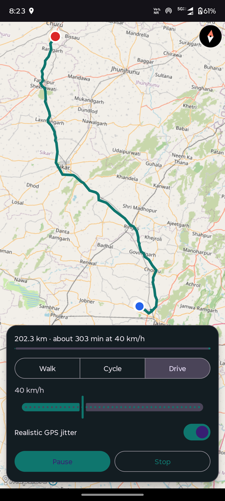
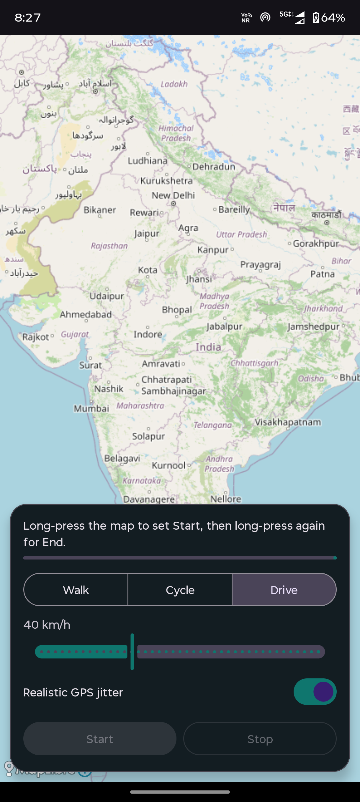

What Marg does
Marg feeds Android’s mock location a realistic stream of positions, so any app that reads location sees you moving.
- Follows real paths
- Routes come from OpenStreetMap road and footpath data, not a straight line between two points.
- Drive, walk, cycle, train or fixed location
- Route along real roads, footpaths, or railway tracks, or stay at a fixed spot with natural indoor walking drift.
- Indoor walking jitter & GPS noise
- Simulates human presence walking between rooms with realistic speeds, headings, and indoor satellite accuracy.
- Speed you control
- Set 1 to 200 km/h and change it while the route is running.
- Pause, resume, stop
- Control the simulation from the app or from its notification.
- Realistic GPS signal
- Bearing, speed and small accuracy changes are sent with each position. Jitter can be switched off.
- No account, no ads
- Open the app and start. Marg doesn’t ask you to sign up or track you.
Set up in four steps
Android only lets one app provide mock locations, and you choose it yourself.
- Turn on Developer options in your phone’s settings.
- Open Developer options, tap Select mock location app and choose Marg.
- In Marg, long-press the map to set the start, then long-press again to set the destination.
- Choose Walk, Cycle, Drive or Train, then tap Start. Open any map or the app you’re testing to see the movement.
Screenshots


Use it responsibly
Marg is for app testing, QA, demos and learning. Don’t use it to break the rules of other apps or services, to cheat, or to mislead other people.
About the developer
Marg is made by Rahul Baberwal. You can find more about me and my other work at rahulbaberwal.com.
Questions, bugs or feature ideas: write to im@rahulbaberwal.com.